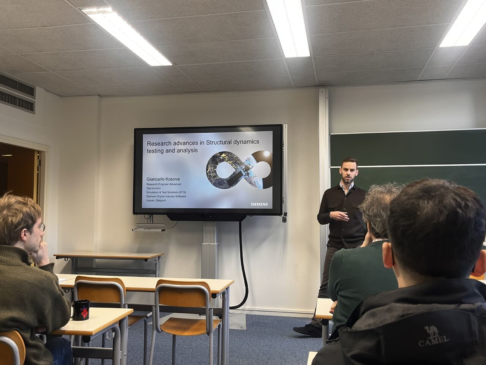
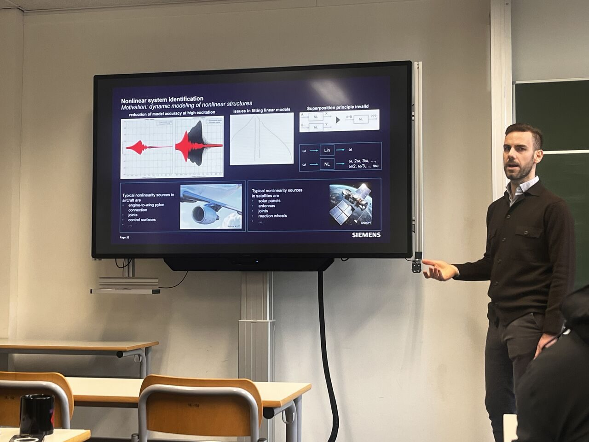

February 2026
Invited seminar by Giancarlo Kosova, Siemens Belgium, on structural dynamics and testing
The group had the pleasure of hosting Giancarlo Kosova from Siemens Digital Industries Software, Leuven, Belgium at Engineering and Technology Institute Groningen, University of Groningen for an invited seminar on "Research advances in Structural dynamics and testing".
Giancarlo shared an impressive and highly informative talk, with strong discussion and interaction from RUG students and researchers. The group thanks him for taking the time to travel to Groningen and engage with the community.
The group looks forward to exploring future collaboration opportunities between Siemens and the NDT & SHM Group.

